USB bring-up — where to put the meter
ordered rev 43eadc1 (the board in your hand)
· back to dashboard
Symptom: plugged into USB, nothing in dmesg at all — the host
never saw a D+ pull-up, so the RP2354A boot ROM never reached USB. Power flows
VBUS → charger → VBATT → LDO → 3V3 → RP2354A
(which makes its own 1.1 V core with the internal switcher).
The LDO enable is gated by the back-side slide switch
SW2 — the whole board is dead when it's off, USB or not.
Work the numbered steps in order; the first missing rail is the culprit.
✅ Resolved (Aug 25): with a charged LIR2032
fitted the board is fully alive — USB CDC, IMU (clean 1 g vector),
charger status and the 45-LED chain all pass. Two contributing faults:
the no-battery charger motorboat below (still true), and poor cell −
contact — the 8 mm center pad sits below the surrounding
mask-over-traces, fixed by tinning the pad proud. This page stays as the
bench reference; test firmware lives in firmware/.
Before probing anything: slide
SW2 (back side, upper area near the IMU) to its other
position and replug. Its as-shipped position is undefined and it gates the
LDO — this alone would explain a completely dead board. Expected ON is knob
toward the battery (pin 1 end); if in doubt, check step ③ in both
positions. And use a known-good data cable — a charge-only lead
shows these exact symptoms.
No battery — sequencing matters
(finding, Aug 24): with SW2 already ON when USB is plugged, PWR_EN/VBATT
was seen motorboating ≈1.8–2.2 V. Below ≈2.9 V the charger trickle-limits
to ≈4 mA (a tenth of the 41 mA program), so the LDO + MCU waking at
≈2 V overload it and VBATT collapses and retries — a "wave" on a DMM.
Cold-start recipe: SW2 OFF → plug USB → wait for VBATT ≈4.2 V →
SW2 ON (full 41 mA is then available; boot ROM needs ≈15–25 mA).
If it still sags, fit a charged cell or a ≈4 V supply: side clip
lands = +, center pad = −. A discharged LIR2032 clamps VBATT low — remove it.
Powered-off resistance sanity check: 3V3→GND and
VBATT→GND should each read tens of kΩ or more, not single-digit
ohms.
Probe map — black lead on G, work ① → ⑥
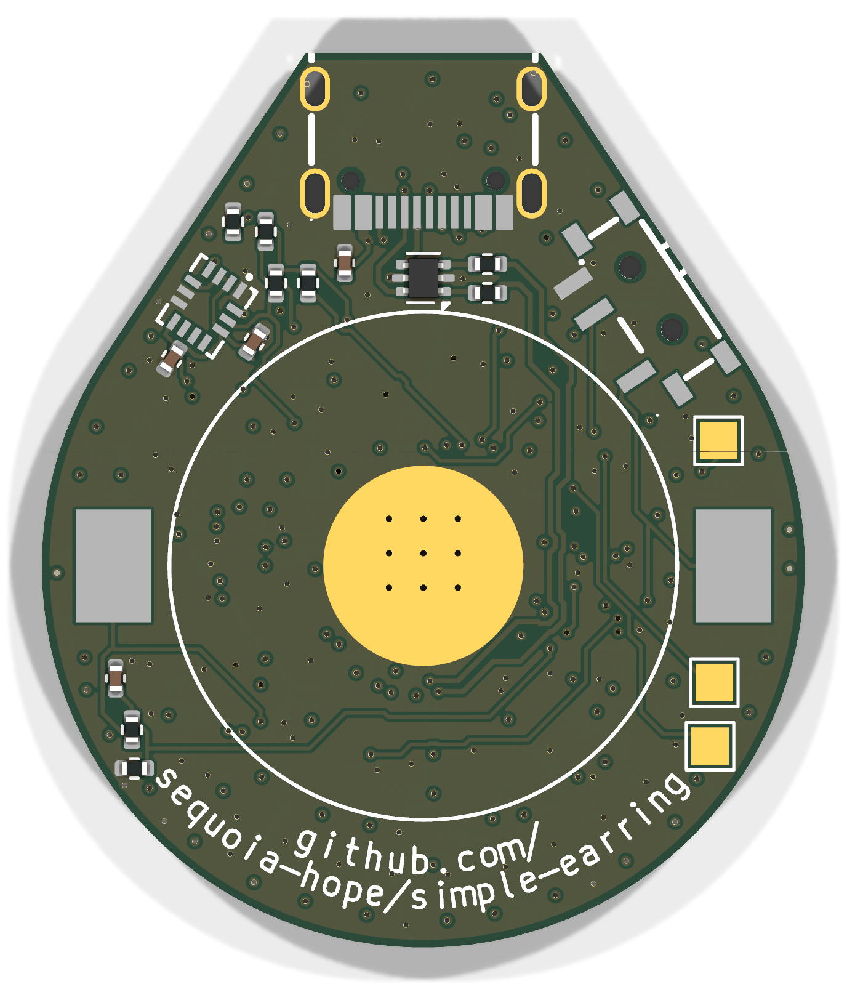
BACK — battery side, as you look at it (USB tip up).
Big center pad = GND: clip the black lead here.
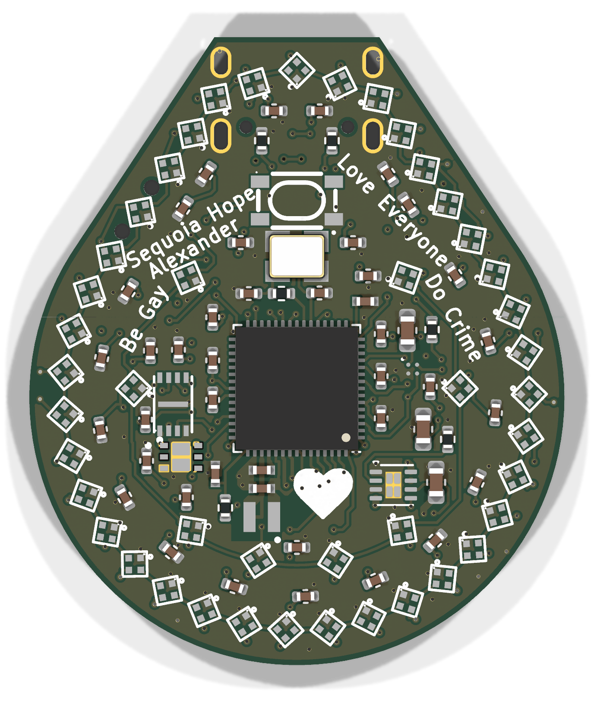
FRONT — LED side (USB tip up). G = USB shell leg barrel,
an easy front-side ground.
The ladder
net
probe at
expect
if it's missing / wrong
G
GND
back: BT1 center pad (8 mm disc) · front: USB shell-leg barrel
reference
—
1
VBUS
front: C16 pad ① · back: C28 pad ①
5.0 V
cable / port / USB-C solder. Try the other plug orientation and an
A-to-C cable; inspect J1's pads at the tip.
2
VBATT
back: either bare clip land ② · front: C17 pad ②
≈4.2 V (may wander 4.05–4.2 with no cell)
charger U2 (DFN2×2, front right — check solder), or VBATT shorted.
0 V here with VBUS good = charger problem.
3
PWR_EN
back: SW2 middle pad ③
≈VBATT when ON, 0 V when OFF
stuck low in both positions → switch solder / wrong part.
4
3V3
front: C19 pad ④ (next to LDO)
3.30 V
VBATT + PWR_EN good but no 3V3 → LDO U3 solder, or 3V3 rail
shorted (recheck Ω).
5
RUN
back: TP1, the lone gold square ⑤
3.3 V
held low → R2 pull-up or a short on RUN; chip is in reset.
6
1.1 V core
front: L1 pad ⑥ (bare inductor land, below-left of the MCU)
1.1 V
3V3 good but no 1.1 V → internal switcher: inspect L1 (the part JLC
flagged) and C12 solder.
7
USB D±
back: beep J1's center pads (dashed ring) ↔ R6/R7 ⑦; then R6/R7 far
side ↔ onward (27 Ω in series)
≈0 Ω to the near side, ≈27 Ω through
only matters if ①–⑥ all pass: open joint on the fine USB pads or the
ESD chip U5.
If every rail is good and it still won't enumerate: hold
BOOTSEL (front button) while plugging in, and eyeball the 12 MHz
crystal's solder (front, above the MCU) — the boot ROM needs the crystal
running before USB works. Blank internal flash should drop into the USB
bootloader on its own (2e8a:000f RP2350 Boot in
lsusb).
Closeups
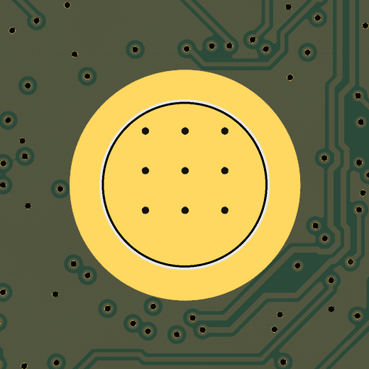
G — black lead here
GND
Back center: the 8 mm battery − pad. Solid ground for
every measurement.
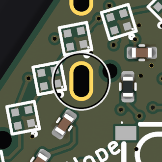
G — front-side ground
GND
USB shell leg barrel (gold oval) — handy when probing
the front without flipping the board.
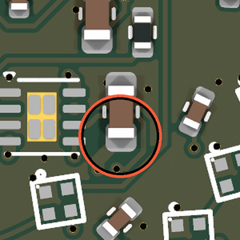
① C16 — VBUS bulk cap (front)
5.0 V
Ringed pad = VBUS end. Near the charger, front right
edge.
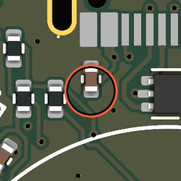
① C28 — VBUS at the ESD chip (back)
5.0 V
Same net, back side, right below the USB connector —
saves flipping.
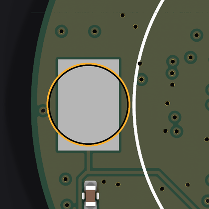
② battery clip land (back)
≈4.2 V
Either bare side land (the clip isn't fitted on this
rev). Fed by the charger even with no cell.
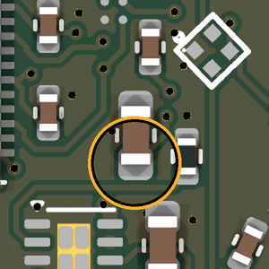
② C17 — VBATT cap (front)
≈4.2 V
Ringed pad = VBATT end, right next to the charger's BAT
pin.
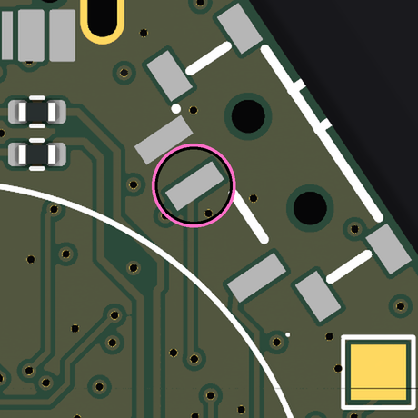
③ SW2 middle pad — PWR_EN (back)
≈VBATT on · 0 V off
The LDO enable. Check in both switch positions — this is
the prime suspect for a totally dead board.
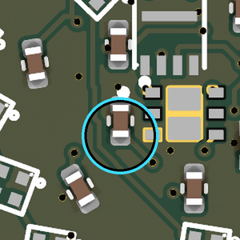
④ C19 — 3V3 at the LDO (front)
3.30 V
Ringed pad = 3V3 end (the pad nearer the LDO's OUT
pin).
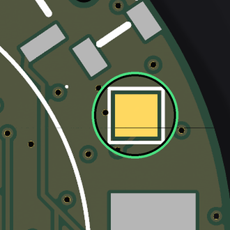
⑤ TP1 — RUN (back)
3.3 V
The lone gold square near the back right edge (the pair
further down is SWD).
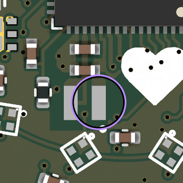
⑥ L1 — 1.1 V core (front)
1.1 V
Ringed pad = switcher output side of the inductor. No
1.1 V with good 3V3 = the JLC-flagged part.
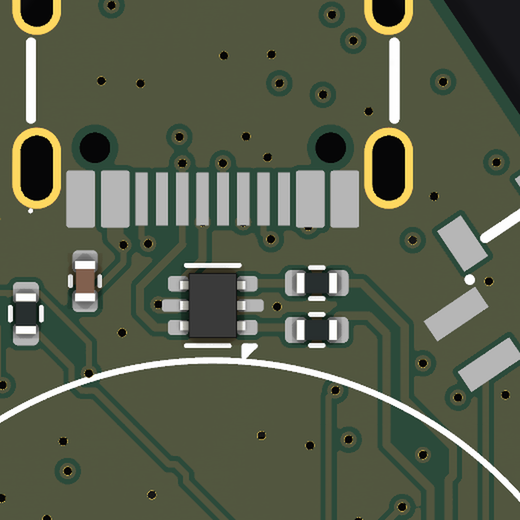
⑦ USB data path (back)
≈0 Ω / 27 Ω
J1 fine pads → ESD chip → R6/R7 (the 27 Ω pair).
Continuity only; board unplugged.
Generated from the
ordered rev 43eadc1 board file; renders are orthographic, so
positions are exact (±0.5 mm). Marker coordinates come straight from the
netlist pads.